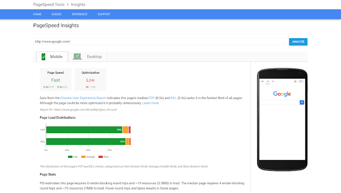
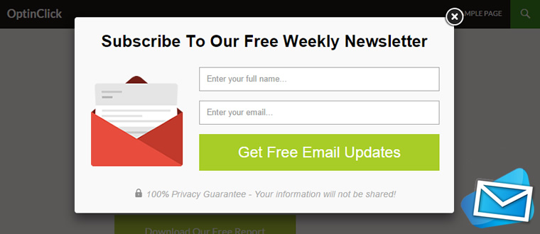
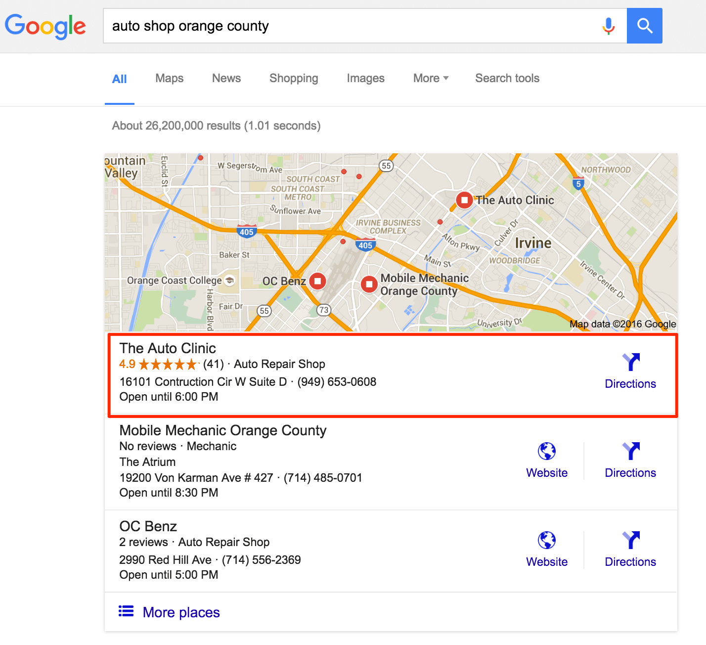
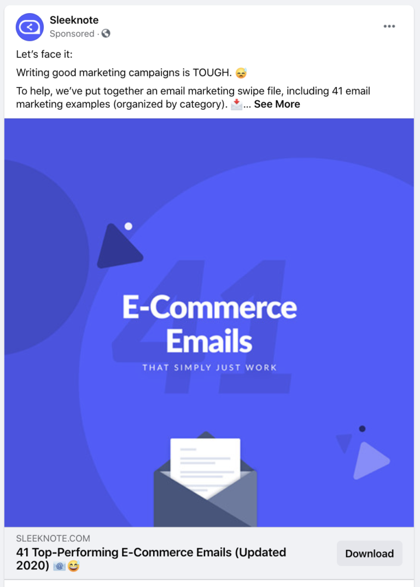
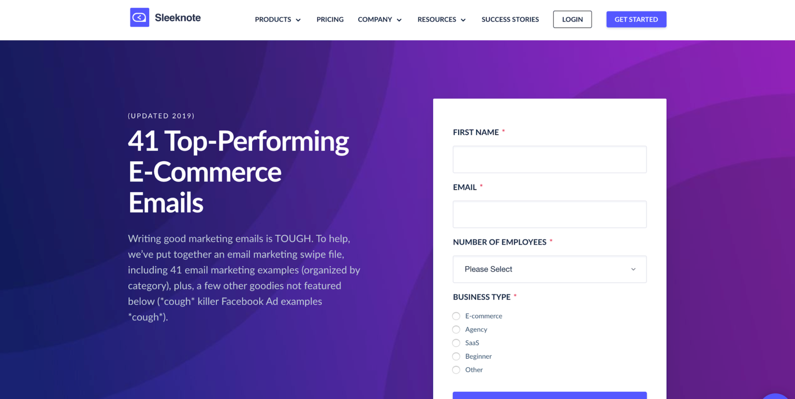
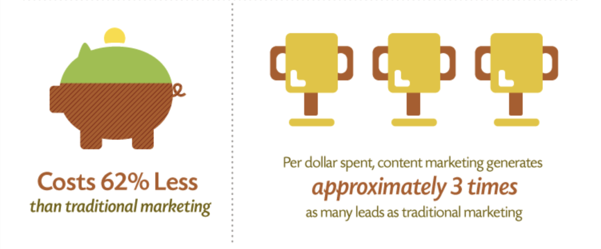
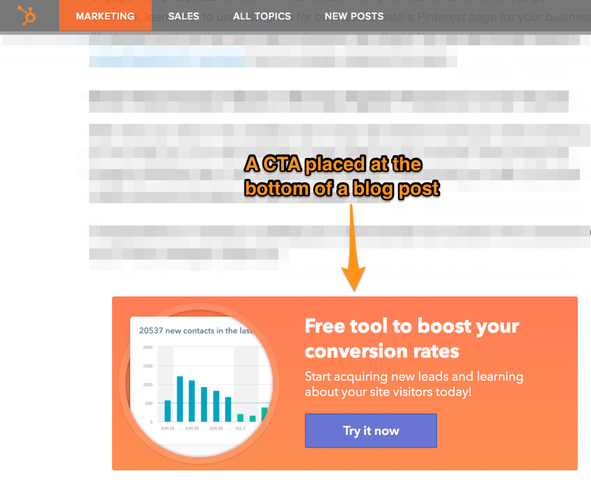
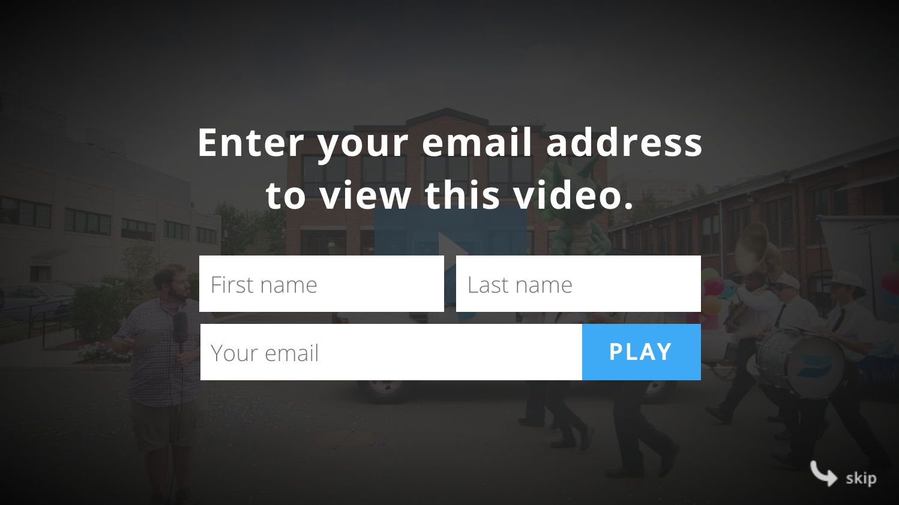
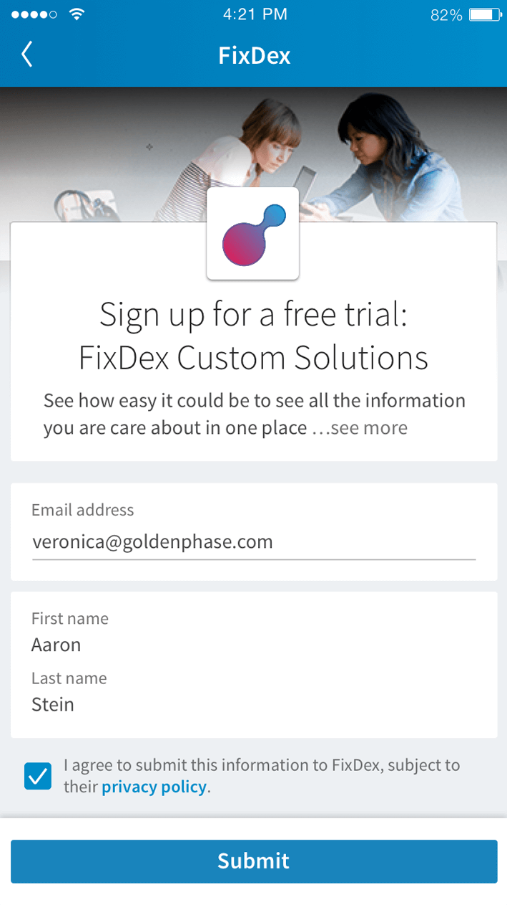
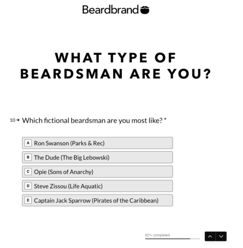

Lead generation is one of the most important things you can be doing for your business in 2020.
After all, nurtured leads are significantly more likely to result in sales than from random strangers off the digital streets.
And while we all know that we should be prioritizing lead generation, the real question is this:
How on earth can we do that?
For companies who are new to lead generation, you might not be sure where to start, especially when there are so many lead generation tactics out there.
In this article, we’ll cover nine of the best ways to generate high-quality leads, and ones released since the start of 2020. Use these, and you’re sure to see your leads skyrocket.
OPTIMIZE YOUR WEBSITE FOR LEAD GENERATION
Ready to start generating leads for your business? Before you do, make sure your website is fully optimized.
The first thing to optimize is the website speed.
Over half of visitors will leave a site that takes more than three seconds to load. If you’ve brought visitors to your site, you don’t want a second or two to be the thing that makes them bounce. Those could have been new leads or sales!
Google’s PageSpeed Insights tool helps to ensure your website speed is fast enough on desktop and mobile:

Your website needs to be optimized for mobile devices.
Did you know that half of your potential customers are more likely to purchase from a mobile-optimized site? That, plus you’ll lose even more as search engines penalize sites that aren’t mobile-friendly.
If you are yet to get a professional website for your business, you can start now. Request for a quote
GENERATE LEADS THROUGH SITE SUBSCRIPTIONS
For this, you’ll need opt-in boxes that catch people’s attention. You can often build these within your email marketing tool. Otherwise, you can use a third-party tool such as OptinMonster or LeadPages.
And as much as you might roll your eyes at the thought of using a pop-up box to snag subscribers, data shows they’re successful. Pop-up boxes drive about 1375% more subscribers than your run of the mill sidebar opt-in.
Here’s an example of a pop-up box that deploys when the visitor is preparing to exit the page:

The opt-in box is only half the battle when it comes to getting email subscribers. The other half is your offer. People aren’t likely to hand over their email for nothing — You’ve got to give them something in return. How about offering a free trial of your product?
Once you do get them to subscribe, keep the relationship going. If you solely reach out to them when you’ve got something to sell, it’s not going to be very effective.
Nurture your leads by providing value to them first. That way, when you make your sales pitch, they’re already a fan.
USE SEO FOR LEAD GENERATION
Search engine optimization (SEO) should be a central part of your lead generation strategy in 2020. Not only can effective SEO bring you free traffic, but that organic traffic is over five times more likely to convert than paid traffic.
Be sure to target the right long-tail keywords. Search engines like Google have their algorithms down to a science. They know what a searcher is looking for, and if your website isn’t it, they aren’t going to show it on the first page of results.
Even if you’re a brick and mortar business, you should keep local SEO in mind. 76% of individuals who use the “near me” function on their smartphone visit a related business. In other words, you want Google to know where you are.
This is what your potential customer will see when they find you via local SEO:

After a visitor leaves your website, you can continue to nurture the relationship on different platforms – if you have tracking set up. Facebook advertising campaigns are one way to do this. You can then target ads at those visitors who bounced.
If you want to learn about the cost of SEO Contact us
GENERATE LEADS USING FACEBOOK ADS
It should come as no surprise that social media marketing is one of the best ways to capture leads for your business.
Perhaps the best way to generate new leads on social media is through Facebook advertising.
Organic reach for Facebook pages has been on the decline, but paid reach is excellent. Facebook ads allow you to highly target your audience, so you know that your ads are being shown to the right people.
To generate leads using Facebook ads, you need to first figure out who your target audience is. Facebook allows you to hyper-target your audience, but that’s only valuable if you know who you’re talking to.
The next step is to create an offer your target audience wants. If you can create a free offer they can’t wait to get their hands on, turning them into a lead will be a lot easier.
For example, here’s an example of a company offering ecommerce email templates in exchange for an email address:

Finally, be sure to direct visitors to an effective landing page that makes it easy and appealing for people to turn over their email address for whatever it is you’re offering.
Here’s the landing page that same company sends their prospective leads to:

GENERATE LEADS WITH CONTENT MARKETING
Do you publish blog posts on your website? If not, it might be time to start. Offering highly targeted informative content via content marketing is one of the best ways to generate and nurture leads.
First of all, content marketing has a remarkably high ROI (Return over internet) — more than three times that of traditional marketing. And not only is content marketing cheaper than conventional marketing, but it also costs 62% less.

The result of quality content marketing is more leads at a lower price tag.
Another reason to turn your attention to content marketing is that it allows you to show people what you’ve got to offer before they pull out their credit cards. And when you give away quality free content that gives people results, they’re more likely to purchase your products.
So how do you engage in content marketing to generate leads?
First, make your articles informative. If you’re not offering value to your potential customers, they’re going to leave. List and how-to articles are popular and keep people on the page.
Make sure also that the content you’re publishing is the content that your target audience wants to read. If your content is catching people at the wrong part of their buyer journey, then they’re less likely to stick around.
Once you’ve attracted people to your website using content marketing, you can capture their lead information with the promise of more valuable information. A great way to do this is by offering a content upgrade or a “Part 2” of the content in exchange for their email address.
GENERATE LEADS BY OPTIMIZING YOUR CALLS TO ACTION
If you aren’t using calls to action on your website, now is the time to start. Research shows that in just about every context, using a call to action (CTA) is more likely to get people to take action than an offer without one.
It’s important, however, that you use just one CTA on each page. If visitors have too many options, they’re likely to take the easiest (leaving). If you give them a single CTA, they’re more likely to act.
One study, for example, showed that emails with a single call to action resulted in a 371% increase in clicks and a 1617% increase in sales.
Let’s talk about the best places to put CTAs. First, include them within each of your blog posts. You can even include the same CTA several times throughout the post.
Here’s an example of a well-placed CTA at the bottom of a blog post:

Next, include a CTA in every email you send out. It doesn’t always have to be a link to a product. You can also throw in a link to your latest blog post, or even include a CTA asking people to respond to your email.
Finally, include a CTA in your social media content. People might be inclined to scroll on after reading your latest post. But if you add a CTA, they’re more likely to engage. One study found that including a CTA on Facebook can increase your click-through rate by 285%.
GENERATE LEADS WITH VIDEO CONTENT
In 2020, it’s clear that video is here to stay. Publishing video content for your business has several serious benefits.
First, video marketing opens you up to entirely different platforms. YouTube is one of the largest search engines out there, and you’ll have access to those searches when you start publishing videos.
But once you get people paying attention to your videos, you’ve got to actually capture the lead. You can do this by using a program such as Wistia, which allows you to gate content and require that viewers enter their email address to watch it.
Here’s what a lead-generating video overlay from Wistia looks like:

Another way to generate leads using video is to use links within your YouTube video profile and video descriptions to send viewers to landing pages.
And not only does video content help to generate more leads, but it also helps to convert leads into sales. More than 60% of people said that video content makes them more likely to buy, and a staggering 90% said video helps them to make their buying decisions.
GENERATE LEADS THROUGH LINKEDIN
You might be surprised to hear that LinkedIn is actually a great way to generate new leads through your business. Let’s talk about some ways you can do that.
First, you can generate leads through LinkedIn connections. If you’ve found a dream client or two, consider connecting with them to form a relationship (in a totally non-spammy way).
You can also use LinkedIn articles to generate leads. Provide valuable information to get people onto the piece. Then use a call to action to send people to your website or an email opt-in landing page.
Finally, LinkedIn comes equipped with lead generation forms that allow you to collect information from potential customers. Here’s an example:

ADD A QUIZ TO YOUR WEBSITE
Quizzes are a fun and interactive way to generate more leads for your website. First, let’s talk about the success rate of quizzes. With an average conversion rate of about 50%, they convert better than most other lead magnets.
Quizzes allow your subscribers to self-segment within your email list. Based on someone’s quiz answers, you can segment them within your list and ensure you’re showing them the best offers.
Tools such as Interact Quiz Builder and Lead Quizzes can help you to create quizzes for anything from personality assessments to telling your potential customers which of your products is the best fit for them.
For example, take a look at this quiz from a company that sells facial grooming products. At the end of the quiz, the company can recommend the best beard products for the quiz taker:

CONCLUSION
Lead generation in 2020 is more critical than ever. You can drive millions of visitors, but if none of them are converting, then it doesn’t help your bottom line. Online lead generation is the crucial middle-man in turning those visitors into customers.
You already know that nurtured leads are far more likely to invest in your product, and now you have the information and the tools you need to help take your lead generation to the next level.
No need to try to tackle all nine lead generation strategies at once — start with the ones that are most relevant to your business.